Publications
Papers, preprints, and interactive research, with a short introduction to each project.
2026
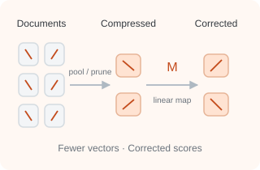
Simple Linear Corrections for Compression in Late Interaction
arXiv preprint · 9 October 2026
We study whether a lightweight scoring correction can recover retrieval quality lost when compressing document vectors in late-interaction models. Distilling the uncompressed model’s scores yields a global linear transformation while keeping the encoder and compressor frozen. Experiments with ColBERTv2, Jina v4, and ColPali2 show improvements across text and visual document retrieval, including gains in 154 of 160 in-domain BEIR settings; transfer across datasets is more variable. The correction requires neither encoder retraining nor document recompression.
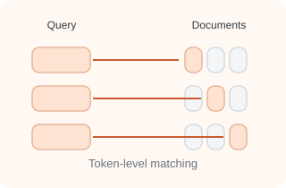
Retrieval Needs Multivectors: An Exponential Separation
arXiv preprint · August 2026
We study retrieval problems where multi-vector representations are fundamentally more expressive than single-vector embeddings. We prove an exponential separation for exact ranking and introduce ANDOR, a benchmark where multi-vector models retain a substantial advantage even after task-specific fine-tuning.
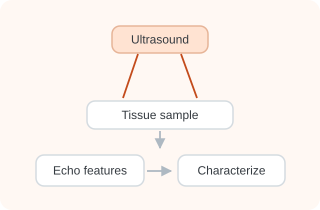
Ultrasound echo envelope statistics to differentiate glioblastoma multiforme from normal brain tissue ex vivo: a proof-of-concept study
Frontiers in Acoustics, Volume 4 · August 2026
We investigate whether statistical features of ultrasound echoes can distinguish glioblastoma from normal brain tissue. Combining complementary envelope-distribution models with machine-learning classifiers provides promising tissue-level discrimination in an ex vivo study, establishing a proof of concept for quantitative ultrasound characterization while motivating validation in fresh tissue and surgical settings.
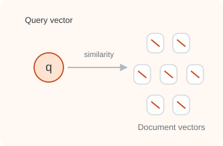
On Strengths and Limitations of Single-Vector Embeddings
arXiv preprint · March 2026
We investigate why single-vector retrieval models struggle on challenging benchmarks, showing that embedding dimensionality alone does not explain their failures. Through controlled experiments and simple mathematical models, we study domain shift, relevance mismatch, catastrophic forgetting, and the drowning in documents effect, clarifying why multi-vector representations can be more robust.
2025
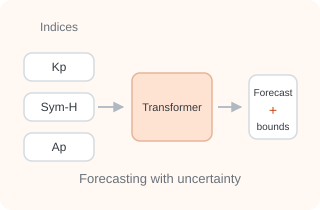
Uncertainty Bounds for Anomalous Geomagnetic Storm Forecasting – A Deep Learning Approach
IEEE Space, Aerospace and Defence Conference (SPACE) · 2025 Best Paper Award
We develop a multitask, multivariate transformer approach to forecasting geomagnetic storm indices. Alongside the forecasts, Monte Carlo dropout provides uncertainty estimates, helping communicate confidence in predictions of anomalous space-weather conditions.
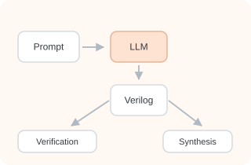
VeriBench: Benchmarking Large Language Models for Verilog Code Generation and Design Synthesis
IEEE International Symposium on Circuits and Systems (ISCAS) · 2025 Spotlight
We benchmark open- and closed-source language models on Verilog design generation, testbench construction, and formal-verification assertions. Beyond checking generated code, we examine synthesized hardware using FPGA and ASIC design tools, highlighting where compact open-source models perform competitively and where correctness and implementation quality remain important challenges.
2024
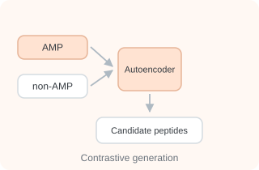
Disentangling the Peptide Space: A Contrastive Approach with Wasserstein Autoencoders
AI for New Drug Modalities workshop, NeurIPS · 2024
We introduce a contrastive Wasserstein autoencoder for generating candidate antimicrobial peptides. The model learns a latent space that separates antimicrobial from non-antimicrobial sequences, combining generative modeling with contrastive learning to guide candidate discovery; computational evaluation then assesses whether generated sequences exhibit the intended antimicrobial characteristics.
2023
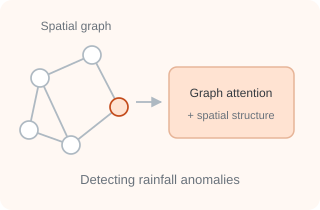
Spatially Regularized Graph Attention Autoencoder Framework for Detecting Rainfall Extremes
Tackling Climate Change with Machine Learning workshop, NeurIPS · 2023
We develop a spatially regularized graph attention autoencoder to identify anomalous rainfall patterns across India. By connecting locations through synchronized rainfall events and incorporating rainfall, pressure, and temperature measurements, the framework captures geographic relationships while preserving spatial coherence in climate anomaly detection.
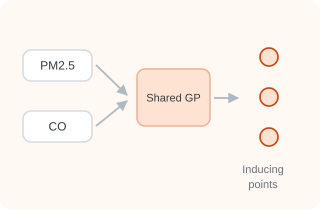
Less But Better: Towards better AQ Monitoring by learning Inducing Points for Multi-Task Gaussian Processes
Adaptive Experimental Design and Active Learning in the Real World workshop, NeurIPS · 2023
We use variational multi-output Gaussian processes to model related air pollutants while accounting for spatial and temporal structure. By learning inducing points and examining their distribution, the framework combines scalable prediction and uncertainty estimation with insights into which locations may be most informative for air-quality monitoring.
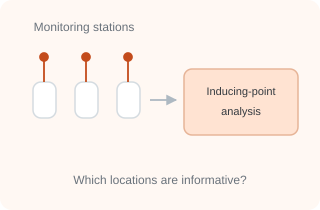
Focus on What’s Important! Inspecting Variational Distributions for Gaussian Processes for better AQ Station Deployment
Computational Sustainability: Pitfalls and Promises from Theory to Deployment workshop, NeurIPS · 2023
We study what the learned inducing-point distributions of multi-task Gaussian processes reveal about air-quality monitoring. Modeling PM2.5 and carbon monoxide in Beijing, we observe that inducing points cluster around particular stations, suggesting a way to identify informative locations and support more targeted decisions about monitoring-station placement.
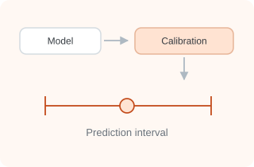
Conformal Prediction: A Visual Introduction
VISxAI workshop, IEEE VIS · 2023
We present a visual introduction to conformal prediction, explaining how predictive models can be paired with uncertainty estimates. Designed as an accessible interactive resource, the work helps readers build intuition for prediction sets and intervals and understand the role of calibration in making model outputs more informative.